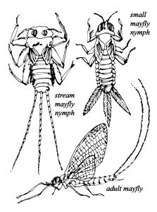
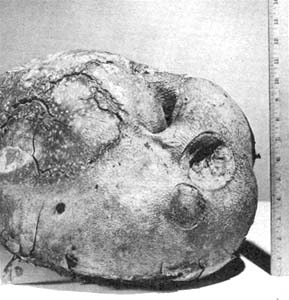
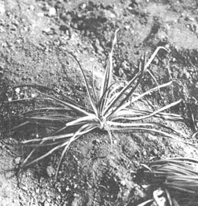
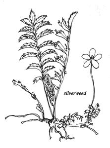
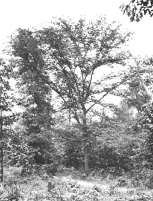

Food Without Farming
James Churchill on wild food foraging: trout fishing, puffballs, silverweed, oyster plant, stewed salsify, and slippery or river elm
by JAMES. E. CHURCHILL
May/June 1972
If there's anything as appealing as a boulder-washing, log-leaping stream flowing through a tall evergreen forest in the spring, I've yet to encounter it. Especially when that stream is full of brook trout. I often go to such a creek in northern Wisconsin and live for a few days breathing the fresh May and June air, drinking unpolluted water and foraging food.
On the first day of such a trip I always skip the morning meal to put myself in the proper mood for finding wild fare. It's surprising how a little hunger sharpens the eye for the delicious goodies found near a rushing creek.
Scattered here and there along the stream's banks, I usually find the white, ghost-like leaves of the silverweed . . . and starlike salsify grows in the fields of an abandoned farm that the creek flows through. Both plants are ready to yield their good food to a hungry forager. Every now and then, if I'm lucky, I'll also stumble across the football-sized mushroom called the giant puffball while on my way to make camp by a stand of slippery elm trees. And once in camp, I generally brew some elm tea to refresh my system for whatever adventures await me further along the waterway.
On my trip this year, however, plant collecting will be only a secondary occupation as I'm primarily out to fish for the trout in my private little stretch of fast water.
These trout are wild and bright-colored and must be approached with caution and finesse. But they're worth the effort because they supply large amounts of protein to go with the vitamins and minerals found in the plants that I'll eat with them. I pull the fish from their hiding places with tiny hooks festooned with bait found along the creek banks and underneath rocks.
One good bait, of course, is the earthworm . . . found (as every small boy knows) at the foot of manure piles or on the edge of damp places. Night crawlers-huge cousins of the angleworm found on top of the ground, expecially on rainy spring nights-make fine natural fishing lures too . . . although some are too big for brook trout to take.
Almost any insect-grasshoppers, crickets, beetles-discovered along the banks of a creek will tempt a fish. Best of all is the larvae of mayflies-called caddis worms or caddis of nymphs-found at the bottom of the stream under rocks and rotting logs. When these little dickens are hatching, trout really go on a feeding spree.
If you observe a mayfly hatch, you'll see a series of small, light-colored shapes breaking loose from the bottom of the brook and rising to its top . . . where they rest awhile before each buzzes off on a short mating flight. The rising insects are sometimes called duns.
Happen onto a pool of these duns and all you'll have to do is scoop them up with your hands and place them in a container. More than likely, though, you'll have to gather the larvae from the creek's bottom. I carry a small piece of window screen for this purpose.
I stake the screen downstream from a small rapids or riffle, then use a stick to stir the rocks very well. I try to turn each rock at least once to dislodge the larvae so the current can sweep them downstream to the waiting screen. A good spot will yield enough caddis worms for the day's fishing in one "stir".
Two points should be noted about this technique of collecting bait. One, placing a screen in a trout stream is reportedly illegal in some states and, two, the thousands of mayfly larvae that sometimes come from a single riffle can sell in a bait shop for two cents apiece. Even if you have to pick up caddis worms one at a time with your fingers (it takes only a little more effort), you may find that the activity can be developed into a well-paying "pin money" hobby.
At any rate, when you have your bait you're ready to go after the fish. I carry the larvae I collect in an empty tobacco tin but almost anything-even a handerkerchief knotted into a bag-will make a suitable container.
Good-sized trout usually are found in the quiet pools at either end of a "long drop" or stretch of swift water. The fish especially like the placid area-or tail-of a large pool because of the abundance of food that floats into and sinks into such an eddy. Although a brook or creek can be fished downstream, I've noticed that trout usually seem to look for danger from the "front" or above. It's generally best then, I think, to approach a specific patch of quiet water from below.
I squeeze one or two small split shot onto my line about one foot above the hook and attach a couple of nymphs by threading the barb through their midsections. The bait is then cast into the water above a pool and allowed to drift naturally past the place where I think a fish would most likely be. I stay ready to set the hook at any time because an alert trout can grab a bait, feel the barb inside and spit the whole wad out again before you can blink your eye.
I've found that when I miss a trout like this, he'll usually bite again on an identical bait presented in the same manner . . . and I do my darndest to be ready for him the second time around. Once I actually pull on the fish and lose him, however, he'll probably quit feeding for quite a while. In that case, I move on upstream to the next pool and try again. Sooner or later I catch enough for a meal of whole fried fish (topped with slices of mushroom and washed down with mint tea).
I clean a trout by making a slit down its belly and removing the intestines. That's all there is to it. The head can be left on for a grip when you eat the fish (finger-lickin' good! ) and a trout has no scales.
I generally begin the first meal of my annual spring outing by cleaning one pound of trout, washing it well and salting it lightly. I then take one pound of the puffball I found on my way down to the stream, and cut it into 3/4-inch thick slices. Next I butter both sides of the mushroom sections, prop them up around the fire on forked sticks and roast them until they're quite tender. In the meantime I'll have the trout sizzling in a frying pan and water heating for the mint tea. When I do the job right, they all come out piping hot and ready to eat at the same time.
The giant puffball also makes a good salad when chopped raw into bite-sized portions (it only takes about a quarter of one of the jumbo fungi to satisfy even the most famished trout fisherman). If I'm along a stream in which watercress grows, I snip off a good handful and add it to the mushroom bits in about the same proportion that I'd mix radishes into a regular lettuce salad. Just these two ingredients make fine eating, but I'm not above tossing in any other salad plants I might find.
When I'm at home I eat puffballs in a variety of ways. They can be sauteed in oil or butter, simmered lightly in soybean milk which has been seasoned with salt and pepper or (best of all) served in mushroom-tomato soup. Prepare the soup by pouring a can of the tomato variety over puffball slices and letting the mixture simmer until the slices are very tender.
Although many varieties of mushrooms are collected and eaten, we all know that numerous poison fungi have killed a lot of folks. Add to this the fact that, so far as I know, mushrooms have no exceptional food value . . . and you have a pretty good case for ignoring them altogether. For these reasons, I don't attempt to use any but the giant puffball (Calvatia gigantea). No lethal plant on the North American continent resembles this huge (sometimes tenpound) white sponge-like growth, so there's no danger there. I think of the puffball as a novel food and not really a large or important part of my diet.
As I continue along the stream on my annual spring excursion, I'll likely find some silverweed (Potentilla anserina) sooner or later. This ghostly silver-shaded plant is both easily identified and easily prepared. It's parsnip-shaped roots-the edible portion of the silverweed-are dug, scrubbed and boiled until tender. Drip some melted grease or butter on the boiled roots and eat 'em hot.
I frequently make patties of the silverweed I harvest at home. For this recipe I dig, scrub and cook a dozen roots . . . then crumble and brown a half-pound of hamburger. When the roots are tender I mash them with a potato masher and stir them into the ground meat. Two eggs and a little milk are then added for moisture and the mixture is stirred until it can be shaped into patties. The cakes are ready to eat just as soon as they've been browned at low heat in safflower oil.
If you're inclined to look upon Potentilla anserina as "just another weed of marginal food value", you should know that the plant was brought to this continent from Europe where it's been used as food for centuries. There are written records of the people of Scotland subsisting on silverweed roots (in some cases it was their only staple) for months on end. It could well have been a securityminded Scotsman that first introduced the plant to the New World.
Silverweed apparently liked its new home Well enough to spread from coast to coast and across Canada to Alaska. Obviously, I'm happy to have it here . . . just as I welcome another immigrant from Europe that I find along my favorite trout stream. That immigrant is the oyster plant ( Tragopogon ), or salsify.
The oyster plant is very dark green with grass-like leaves and a stout stem that yields a white, milky juice when broken. Salsify flowers are yellow or purple and the plant grows wild from coast to coast in the United States and into southern Canada. It's so good that it's raised in gardens and sometimes even grown commercially.
Every part of salsify-leaves, stem and roots-is edible and it's no accident that the vegetable is called the oyster plant. When cooked or steamed a short time, salsify's taste very much resembles that of sea food. I use this trait to good advantage in what I call my "combination sea food meal".
For such a springtime dinner I first catch two medium-sized trout and about a dozen large bullfrogs down at the stream. The trout are cut into pieces approximately two inches square and browned in oil and I roll the frogs' hind legs in a bread crumb and egg batter. The main dish also calls for six well-scrubbed salsify roots which I slice lengthwise and roll in the same batter used to coat the frog legs.
I then pour a good layer of peanut oil into a large fry pan, heat it to the simmering stage and put the batter-coated salsify in to cook until it's golden brown outside and well done inside. At that point I add the coated frog legs and the precooked pieces of trout to the skillet and simmer all three ingredients together. When the frog legs are done, I set the pan in the middle of the table-which may be a rock if I'm backpacking-and enjoy the delicious one-dish meal while it's still hot.
Any sea food dinner is complemented by a good mess of greens . . . and salsify is first-rate in that department too. Pick a generous handful of the tender leaves and stalks of the oyster plant and tear them into bite-sized pieces. Place the shredded salsify in a pot with a small amount of water and cook until tender. Serve with butter, if you have any, and use the water from the greens for tea.
At home I prepare oyster plant in many other delicious ways . . . one of the best of which is Baked Salsify. You can duplicate this treat by melting three tablespoons of butter and peeling and chopping two tablespoons of wild onions, tops and all. Saute the chopped onions in the butter until they're brown, then put them and two cups of shredded salsify roots in a medium baking dish. Sprinkle with 1/2 -tablespoon salt and a pinch of maple sugar or honey. Pour 1/2-cup soybean milk over the fixings, cover and bake at 350° Fahrenheit until tender (20 minutes).
Another tasty dish is Stewed Salsify. For that one, wash and scrape about six good-sized roots and slice them crossways into '/a-inch slices. Place the pieces in a sauce pan and barely cover them with soybean milk. Then add salt, paprika and a little garlic. Stew slowly until tender and eat as oyster stew.
But back to the trout stream and a huge river elm which supplies another selection of springtime edibles, condiments and medications.
The slippery elm or river elm ( Ulmus fulva ) closely resembles the American elm (slowly becoming extinct from the Dutch elm disease) and covers about the same range. The leaves of the slippery elm are somewhat larger, though, and the bark has vertical lines or furrows running all the way from the top to the bottom of the trunk. If you find an elm and don't know which one you've encountered, just put a pencil point or tip of a twig in a furrow of the bark and move it upward. If you have to change furrows often to continue up the trunk, you're probably looking at an American elm. No, or almost no, changes indicate that the tree is a slippery elm.
The reddish inner bark, which peels very easily in the spring, is the edible part of the slippery elm. It's harvested by finding a large tree and carefully cutting the outer bark away from the trunk and large limbs. You can do this without harming a tree simply by sawing off a few of the larger, lower limbs and peeling the bark only from them. I recommend the method. It's kind to the tree (since you're pruning it) and should produce enough of the reddish inner material for any average homestead.
In general, the inner layer you want will stick to the outer bark as you peel it from a branch. Occasionally it adheres to the main part of the limb itself. Either way, it's easy to remove.
Once you've collected a generous supply of the inner slippery elm bark, take it home and spread it out to cure on newspapers in a dry part of your cabin. Some folks even bake the material in the oven (at very low heat with the door ajar) until it's brittle enough to shred.
Several years ago, as an experiment, I dropped a good handful of fresh inner elm bark into a pressure cooker and "let 'er go" for an hour at 15 pounds pressure. The finished bark was tender enough to slip down the throat like gelatin. That was so successful that I added meat to another batch of the bark and cooked it under pressure too. It made a pretty good soup!
I next decided to indulge my sweet tooth by pressure boiling the elm bark with hard maple sugar to make candy. Try it yourself by boiling the mixture for one hour, pouring it into a plate and cutting it into small squares when it cools. The finished product isn't just something to eat for pleasure . . . slippery elm candy is a very good medicine for stomach complaints, lack of calcium and sore throats. You can also try a piece on general principles whenever you feel a little out of sorts.
When I'm camping near my trout stream in the spring, I use slippery elm bark in yet another and more traditional way. Just before I go to bed at night, I dig down under the roots of a large sugar maple and make a hole big enough to set a pan in. Directly above the container I snip off one of the roots so that the maple sap can drip into the pan while I sleep. The only trick this late in the spring is to select a tree growing on the north side of a hill. Such a maple grows slower than those on a south slope and, therefore, has sap running in its roots later in the season.
Early the following morning I'll have half a pan of rather darkish-colored liquid. By the time the first rays of the sun touch the top of the maple, the sap will be running in a steady drip and I'll soon have a pan nearly full.
Then I peel a few six-inch strips of the inner bark from a four-inch-thick elm limb, slice them into small pieces, drop them into the sap and boil the ingredients for a good half hour. When it cools I quaff the liquid, eat some slices of whole grain bread from my pack and nibble a piece or two of trout. Soon, I'm ready to face another "hard" day of fishing.
The last time I did this, I gave my leftovers to a chipmunk that had been frisking by from time to time as I ate. He grabbed a piece of bread and ran into a hollow log and zipped right back out again without it. Then, as I sat very still, he ran up my pants leg and bit the end of my finger (which was resting on my knee) hard enough to draw blood.
I could've reflected on the fact that even chipmunks bite the hand that feeds 'em . . . but I didn't. Instead, I washed the in the stream, coated it with slippery elm sap "disinfectant" and went on fishing and foraging.
 giant puffball |
 oyster plant or salsify |
 slippery or river elm |
|
 |
 |
 |